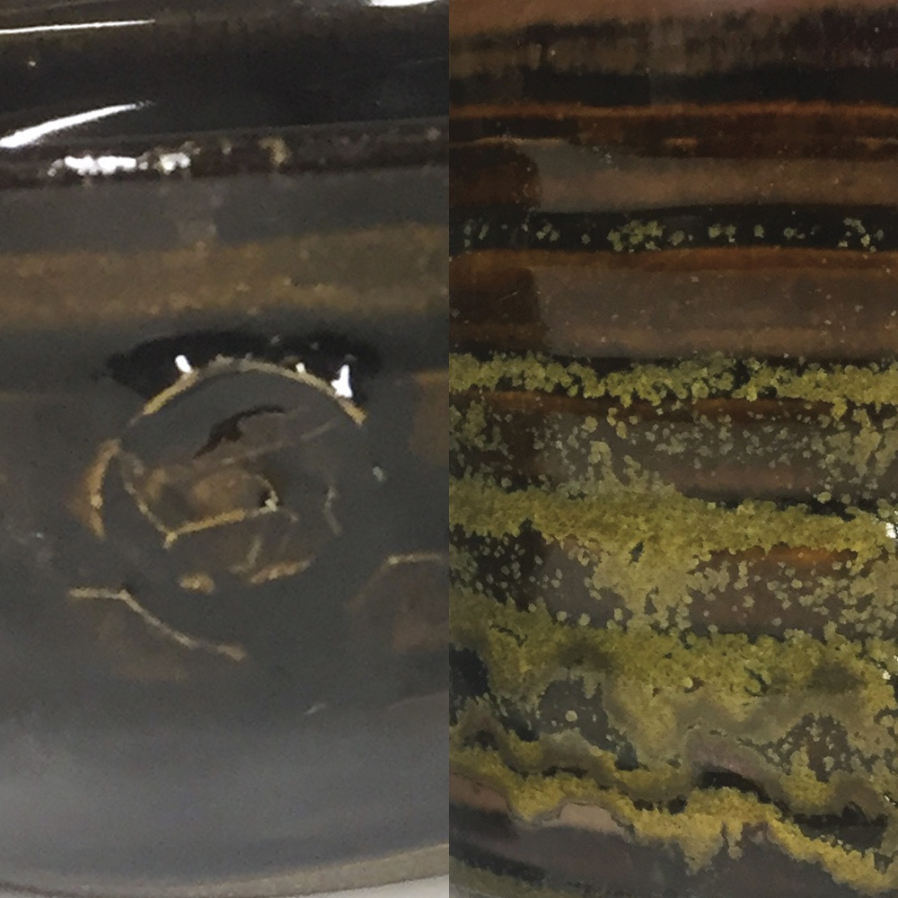

Recipe
Tenmoku Gold
A cone 6 oxidation tenmoku/teadust glaze that develops amber-gold depth and begins forming pyroxene crystals with slower cooling.
Process
Application: Not captured.
Notes: The Ceramic Arts Network entry says slower cooling starts pyroxene crystal development. Ian Hall-Hough notes that replacing the red iron oxide with 1% cobalt oxide produces a dark blue variant.
Fit: No fit guidance was published on the recipe page. Test on your clay body and cooling cycle.
Context
Surface tags: glossy to satin, amber, gold, crystalline, iron
Clay bodies: Not captured
Sources: can-tenmoku-gold

Ingredients
| Material | % | Role |
|---|---|---|
| Dolomite | 7.88 | flux |
| Gerstley Borate | 3.39 | flux |
| Lithium Carbonate | 6.19 | flux |
| Whiting | 8.98 | flux |
| Cornwall Stone | 67.37 | flux |
| Silica | 6.19 | glass former |
| Red Iron Oxide | 11.18 | colorant |
Cone-6-Oxidation-Slow-Cool
Kiln: not captured
Atmosphere: oxidation
Schedule: Cone 6 oxidation.
Cooling: Slower cooling encourages pyroxene crystals.
Hold: 0
Notes
Tenmoku Gold matters because it puts the reduction-look target on the darker tenmoku/teadust side rather than the red or shino side.
- Cooling is the main variable here, not only coat count.
- It should be tested next to Mayco Wrought Iron because both chase dark, speckled, reduction-adjacent surfaces through oxidation.